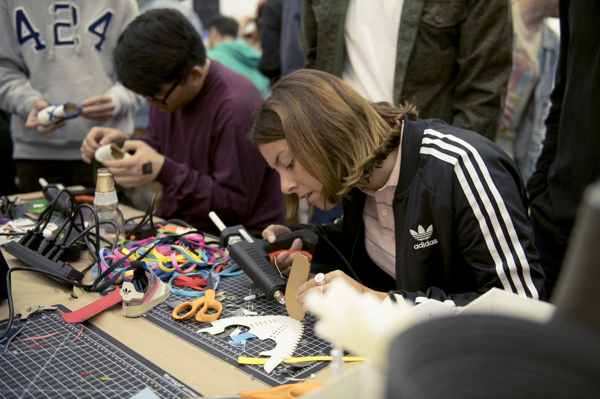

PERFACTION IN CRAFT

PERFACTION IN CRAFT
the company was started by Adolf Dassler in his mother's house he was joined by his elder brother Rudolf in 1924 under the name Dassler Brother Shoe factory Dassler assisted in the devlopment of spiked ahtletic footwear,he transition fro a previous model of heavy metal spikes to utilisin canvas and rubber Dassler persuadded US.sprinter Jesse Owens to use his handmade spikes at the 1936 Summer Olympics.in 1949 following a breakdown in the relationship between the brothers,Adolf created Adidas And Rudolf established Puma which became Adidas business rival
We find inspiration wheather ot's on the street on a journey or on the run.Our design team are constntly working to redfine the way clothing and footwear transforms the future pitch.court or course Driven emotion and from we consider the process of designing products as a lot that just sketching
Our designer love the feeling of dicovery when they invent shapes materils and function when we create a product that makes our heart beat faster, we know we're onto something You Know that feeling?
